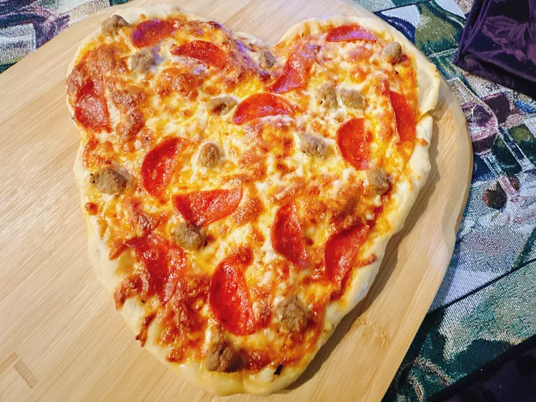

HEART SHAPED PIZZA RECIPE
Home

DESCRIPTION
This heart shaped pizza would be perfect for your beloved spouse/partner wouldn't it?
INGREDIENTS
- 1 pound prepared pizza dough
- 1/2 cup pizza sauce
- 3/4 cup shredded mozzarella cheese
- 1/4 cup shredded Parmesan cheese
- 1/4 cup crumbled cooked sausage
- 1/4 cup pepperoni slices, or as needed
DIRECTIONS
- Allow dough to come to room temperature, about 30 minutes.
- Preheat the oven to 450 degrees F (230 degrees C).
- Divide the dough into 2 unequal pieces. One piece of dough should be smaller. Take the larger piece and press out into a square shape. Take the smaller piece and roll into a circle. Cut the circle in half.
- Take a teaspoon of oil and brush a pizza stone. Position the dough square on the pizza stone with one point of the square pointing down.
- Position the straight side of a dough half circle along the upper left edge of the square. Place the other half circle along the upper right edge of the square. Press seams together to join.
- Spread pizza sauce over dough to 1/2-inch from the edge. Top pizza with shredded cheese, sausage and pepperoni.
- Bake in the preheated oven until cheese is melted and crust is golden, 17 to 19 minutes. Let rest 3 minutes before slicing.